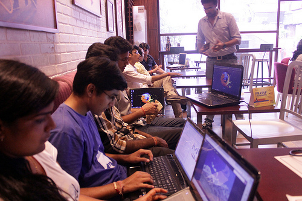
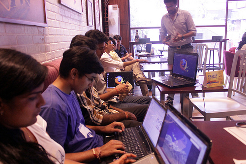

Pick a date
Setting a date will push you to get your planning and preparation finished. How about 3 weeks from tomorrow?-
Find a space
See if you can get outside a classroom because classrooms may have negative connotations for learners. See if you can partner with a school or non-profit that can handle your need for space - and/or transportation - at minimal or no cost to your club.-
an Independent Cafe

Buy your event snacks and drinks (or have participants buy their own) at a local cafe in exchange for a reserved space. Read about Mozillian Gauthamraj's experiences in Cyber Cafés!
-
the Local Library

Libraries are community hubs, and librarians are usually enthused about having digital literacy events take place in their spaces. Just take a look at this infographic!
-
a Hackerspace

Be sure you reserve a comfortable venue where you can move the chairs and sit together in a circle. Ensure there is Internet, power and good lighting. Nearby Hackerspaces are usually perfect for an event!
-
a Museum

Plan to tie in topics relevant to the museum, then speak with the museum director about your event. Ask the museum if they'll require an admission fee.
-
an Independent Cafe

-
Secure Funding
The best Clubs keep costs low by focusing on the essentials and tapping free and cheap resources. But it's still best to assess what it's going to cost to pull off your events.
-
Gather Materials
You'll want to double check that your space is available for your Club, and that your equipment and materials are available for when learners arrive. For group sessions and other brainstorming collaboration, here are some recommended supplies:
- Keep a stock of pens, post-its, markers, paper, craft supplies and anything else that will help your learners be creative.
- Make sure you have enough computers or that you have all the materials you need to #teachtheweb in low-fi and no-fi ways. If you don't have the means to provide computers, make sure participants know to bring their own and have an updated version of their browser installed.
- Arrange for snacks and drinks. All that cognitive collaborative work making will make people hungry and thirsty!
- Name tags are an essential mechanism for participants to get to know one another. A few suggestions:
- Consider using a specific name tag format that has high impact: for pre-printed name tags, use only the first name, make it large on the name tag, then print the organizational affiliation in smaller type below it. This immediately makes things more human, giving participants a highly visible handle to use in introducing themselves to friends they have not yet met.
- Don't make different style name tags for participants and facilitators; a single name tag style without role labels breaks down barriers and enhances community energy.
- Go low budget! You can use a marker to write names on a piece of masking tape or grab a pack of printable labels to use as name tags.
- Make sure your materials reflect community norms while allowing kids the opportunity to express themselves.
-
Run an IT Check
There's likely someone at the space that takes care of that building/office/restaurant's wifi/Internet. Find out who that person is, and talk to them about your Club. Make sure that the space will have a stable enough Internet connection for the number of participants expected. If you have to set up your own wifi and/or power, see this awesome checklist from David Wolever. Also see the Wifi port checklist from the Mozilla community.
Make a list of participants
Personally invite as many learners as possible to your club and use your networks to get the word out. Remember to recruit a number of facilitators proportionate to the number of learners you anticipate attending club. We like a ratio of 1:8 or 1:12 facilitators to learners, but if people are engaged with the work - and you are super prepared - you can sometimes get away with something more like 1:20.